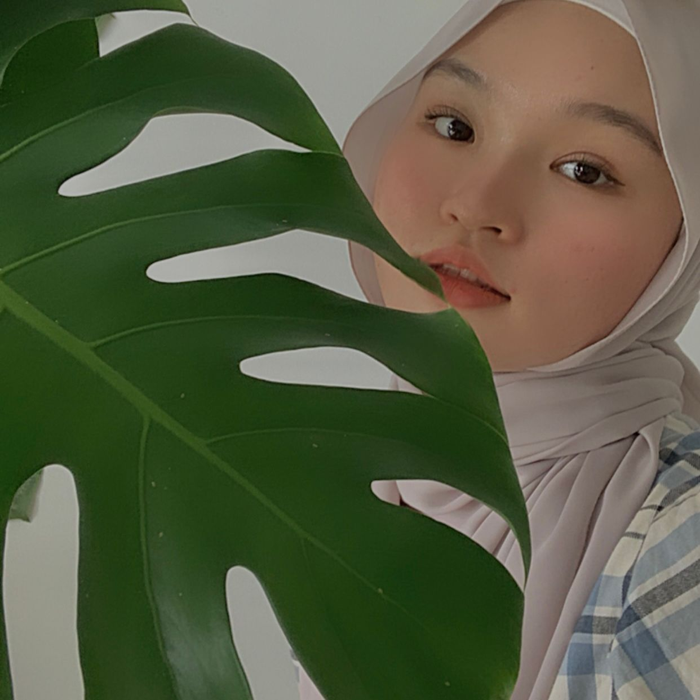

My name is Nur Tashrina Aireen Binti Sazli.
I am 20 years old.
I was born on 9 October 2021 at Hospital Bagan Specialist, Pulau Pinang.
I live in Nibong Tebal, Pulau Pinang.
Basically my favourite color are white and pink.
I would always love to eat Tomyam.
During my free time, I love to try and error various recipes to improve my cooking skills.
My primary school was at SK Sungai Bakau, Pulau Pinang.
Then, I went to SMK Saujana Indah, Pulau Pinang for secondary school
After I graduate my diploma,
I would like to further my study in Web Content Management.